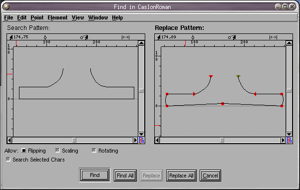

FontForge will allow you to search a font for all characters containing a certain shape and optionally replace that shape with another shape.
FontForge allows you to control whether a match will be found even if the shape has undergone certain transformations (ie. rotated, scaled, flipped, etc.).
Normally FontForge will search all characters in a font, but you may restrict the search to only those characters which are selected.
The search and replace panes behave very much like the outline character views and you may draw within them using the tools available in the outline view. The menu at the top of the window is a subset of the menu in the outline character view. Only one of the two panes is active at a given time, and the menu works on the active one. You can make a pane active by clicking in it, or by using the [Tab] key.
The [Find] button will start at the beginning of the font and
search for the first character containing the search pattern and then open
an outline character view looking at that character. After [Find]
has been used once the button changes to [Find Next] whose
behavior is similar excepts that it starts at the last character found and
displays the next character in the same window.
The [Find All] button will select all characters containing
the pattern.
The [Replace] button only works after a [Find]/[Find
Next]/[Replace]. It replaces the thing found with the replace pattern,
and does another [Find Next].
The [Replace All] button replaces all instances of the search
pattern with the replace pattern and selects all characters found.
There are two different kinds of search, and which is used depends on the shapes in the patterns. If the search pattern is a single open path (and the replace pattern is too) then the search will look for the search pattern within any path. But if the search pattern contains a closed path or multiple paths, then the search looks for an exact match, ie. for each path in the search pattern there must be a path in the character which matches it exactly.
At the moment I see two possible uses for the replace feature:
